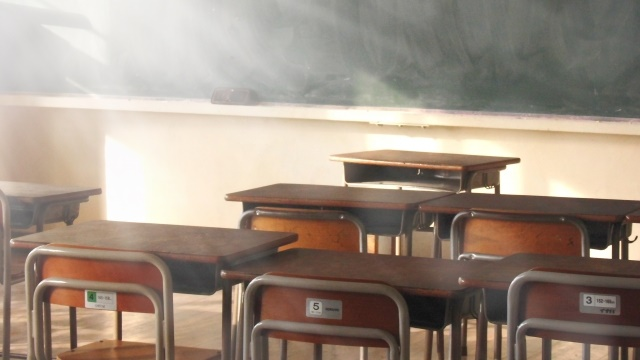

「国家百年の計は教育にあり」ということばがあります。
「教育は国家百年の大計」とも言われ、人材育成こそ国家の要であり、また長期的視点で人を育てることの大切さを説いた名言として知られています。（出典は中国春秋時代の政治家で思想家でもある管仲の著作『管子』にあると言われている）
私としては上のことばの変形である「教育の計は百年にあり」のほうがピンとくるものがあります。
いずれにせよ教育というものは目先のことだけ考えるのではなく、目に見えないほど遠くに目標をしっかり見すえて行うのでなければならない。従って教育する者は、自らの教えがすぐに成果となって表われなくても、時を経て生徒が成長した暁に理解されることを信じて実践することが大事ということです。
要するに教育というものは、成果として実を結ぶのには百年といわずとも相当の時間がかかるということです。
生徒の側からすると学校を出て何十年も経ってから「あのとき先生が言ってたのはこういうことだったのか」と腑に落ちる瞬間があったり、よくよく振り返って「いまの自分は当時の先生方のおかげ」と感じたりするということです。
それは思ってもいなかった瞬間に突然わかることもあります。
一種の天啓のような、電撃的閃きという形でやってくることもあります。
私にもそんな体験がありました。
理不尽な教師を罵倒する
それは私が40も半ばになったある夏の日でした。その日私は自宅浴室で裸になってシャワーを浴びていました。
そのとき私は自分が教えている1人の男子生徒のことを考えていました。その生徒は成績は優秀だけど何かと態度の悪い子でどうしたものかと思案していたのです。
「まったくあの子には困ったものだ…」と私は頭の中でつぶやいていました。多分私も手を焼いていたのでしょう。１度ハッキリ注意すべきか本人の自覚に任せるべきか…堂々めぐりの思考が続いていました。
「確かにあの子は頭は良い。しかしあの態度じゃ将来困るよなア…。ちょっと心配だな」
そのときある記憶が、ひとつの情景がよみがえったのです。それは何十年も封印して完全に忘れ去っていた記憶でした。
それは私が高校３年のときのエピソード。ある日、数学の授業中教師が１人の女子生徒を指名し宿題の解答を黒板に書くよう命じました。
中年の数学教師は、日ごろから分かりづらい授業で有名で私たち生徒の評判は最悪でした。
第一ゴニョゴニョつぶやくばかりで何を言っているのか意味不明なこと。第二にそれでいて感情の起伏が激しく、妙にニコニコしているかと思うと急に怒り出したりと先の読めない性格だったからです。彼の授業はいつもよどんだ空気が漂い、私たちも鬱屈した反感を持っていました。
で、彼女が席に戻ると中年教師は解説するかと思いきや急に怒り出し「こんなのは教科書ガイドの丸写しだろ！」と罵倒し始めたのです。その女子生徒は地味ながら真面目そのものという感じの秀才で、そんなことをするタイプではありません。
私は思わず立ち上がり「先生、いまの言葉取り消して下さい！」と言い放ちました。
教師は一瞬驚いたようでしたが、ちょうど終業のチャイムが鳴ったこともあり「文句があるなら職員室に来い」と捨てゼリフを残して出て行ったのです。
私は彼の後を追って職員室に入ると大声で詰め寄りました。
「何であんなことを言うんだ。バカにするな。取り消せ！」
すると数学教師はヘラヘラした口調で首を傾げながらこう言ったのです。「君の言うこと何だか良く分からないなア…」
私の理性はふっ飛びました。激昂した私は大声で罵倒し、彼の机を拳でガンガン叩きながらしばらくわめき続けたのです。
確かその間、職員室中が私たちを注視していたと思いますが不思議なことに誰も割ってこないのです。シーンとしていました。
もしかすると私の剣幕に気圧されたのかもしれませんが…。
散々わめくと私は職員室を後にしました。
K先生のエピソード
その日の放課後、私は掃除当番で少し遅れて下校しようと廊下を１人で歩いていました。
そのとき、隣の教室の入口に英語のK先生が立っていて私を見つめています。なぜか満面に笑みを浮かべて。
K先生は小柄でメガネの田舎ナマリ。英語の発音もナマると生徒たちから陰で笑われていました。
で、そのK先生通り過ぎようとする私にニコニコしながら声をかけてきたのです。
「管野君、私は君にはいつも感心してるんだよ」
不審そうな私にかまわず彼は続けます。
「私はね、君がリーダーの才能があると思ってる。クラスでもリーダー的存在だし、将来きっと何らかの形で指導的立場になる人間だと信じてるんだ…」
私がリーダー？ 指導的立場？ この人何いってるんだろう…？ 私はリーダーなどではなかったし第一そんなこと考えたこともなかったからです。
それから彼は口調を少し改めこう言いました。
「ところで管野君、さっきの○○先生に対する態度なんだけどあれはちょっと…どうかな。あんまりよろしくないよね」
さらに「マア、人間関係というのは難しいものだからなア」と言い、ハハハと声に出して笑いました。
要するにK先生は私の数学教師への態度を注意しているのです。でも不思議とイヤな感じはしませんでした。
K先生の口調は穏やかで、私の感情を傷つけまいとする配慮が伝わってきたからです。
しかし私は、このK先生とのエピソードは長く記憶の底に沈めて忘れていました。私にとっては数学教師への反抗事件のほうが大切だったのです。数学教師は何といっても皆から嫌われていて、私はそんな皆の思いを代弁して反抗する役を買って出た。つまり私の行為はいささか品のないものであっても正義感からのもので、あの事件は私にとって自分の正義感の強さを象徴する出来事であったということです。
だからその後のK先生から受けた「やんわりした注意」は、所詮は形を変えた「お説教」でしかないと心のどこかで思っていたのでしょう。
四十過ぎて分かった恩師の愛
そんなK先生を再び私が思い出したのが、先に紹介したシャワーを浴びながら教え子のことを考えているときでした。
そのとき私は、その生徒の態度の悪さについてどうしようかとアレコレ考えを巡らせている最中でした。
「あんなんじゃ将来困るぞ。心配だな…」
「心配」という言葉が頭に浮かんだそのとき私はアッと思いました。
「あんなんじゃ…心配！」という自分の心の声に呼応するようにK先生の顔がいきなり浮かび上がったのです。するとあの高３の日のK先生とのやり取りが一瞬でよみがえりました。
「そうか心配だったのだ。」私がいまちょうど自分の生徒を心配しているようにK先生も私のことが心配だった。
30年という時空を超えてK先生の気持ちが私の胸にドンと迫ってきました。
あの日、K先生は職員室で口汚く数学教師をののしる私の姿を目撃したのでしょう。
「ああ、あんな言い方をして困った奴だ。せっかくいいものを持っていても、あれじゃ将来困るぞ」とでも思ったのでしょう。
K先生は私に注意したいと考え、しかし頭ごなしに説教しても通じないと色々頭を悩ませた末に、放課後私が1人になる機会をうかがっていた。そして下校する私に声をかけた。
言葉を選びながら、私のプライドを傷つけないように、しかしメッセージはしっかりと伝えておきたいと決意して。
そう考えれば、担任でもないK先生がなぜあのタイミングで私の前に現れたのか。満面に笑みを浮かべていたか分かります。
すべては私のことを思ってのことでした。ただ私の将来を危惧し何とか救おうとする純粋な教育者の魂からの行為でした。
私を「リーダーの才がある」と言ったのも、単なる言葉のアヤではなく彼なりに私の一面を見通してのことでした。
いまの私にはその気持ちが痛いほど分かります。どんなに才能があろうと、良い資質に恵まれていようと人間関係を破壊するような傲慢さがある限り、この生徒は大成しない。このまま見過ごすのは忍び難い。そう思った。
K先生は微笑みながらも必死の思いで私に語りかけたのです。その気持ちがいま手にとるように分かります。それは恩師の愛でした。
私の両目から涙があふれ出ました。シャワーで流そうとしても次から次と滝のようにあふれます。
「先生、分かりました。やっと分かりました！」
私は思わず心の中で叫んでいました。そして遅すぎる感謝―お礼―の言葉をつぶやきました。
「K先生、ほんとうにありがとうございました」
教育は目先の成果を追うものではない
K先生のことがハッキリ思い出されて以来、私は改めて自分をふり返り色々な「気づき」を得られたと思います。
数学教師に反抗したことは、正義感の発露でも何でもなく（多少はあるにしても）英雄気どりの幼稚な示威行動であり、鼻もちならないパフォーマンスであること。
すぐにへ理屈をろうして他人を高圧的にやりこめることなど、自分の欠点が客観的に見えてきました。
一方でK先生から「リーダータイプ」と指摘されたことは、有り難く受け入れ自分の資質の１つとして生かしていこうと前向きに考えられるようになりました。
そしてやはり１番大きな気づきは、人を育てるということは何と長い年月と忍耐が必要かということ。しかし教育する者はいま目の前にいる生徒がどれほど理解していなかろうと、その子の将来の「可能性」を信じあきらめることなく愛情をもって働きかけること。目先の効果ではなく何年、何十年後の「気づき」に賭けることこそが教育者に求められる姿勢だということです。
そうすればいつか分かる日が来る。四十過ぎて分かった私のように。
教育者にとっては、その「成果」を見る日はたとえ来ないとしても、百年後を見すえる思いで日々生徒指導に励まなければならないということです。
私もそのような思いを忘れずに若い人たちと接していきたいと考えています。
それが、今や当の昔にこの世を去ったK先生への私なりの恩返しではないかと感じるからです。
「教育の計は百年にあり」はだからK先生とのエピソードを思い起こさせ、今も私を暖かく包み込む大切な言葉となっています。